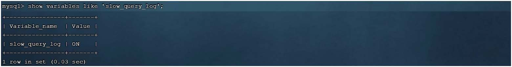
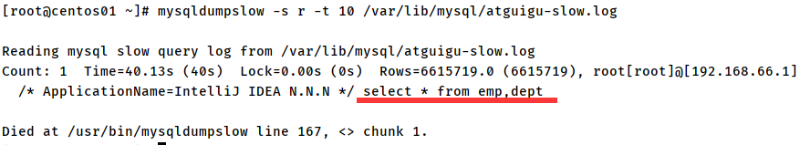
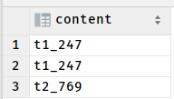
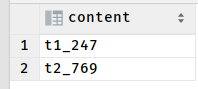
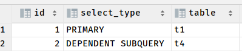
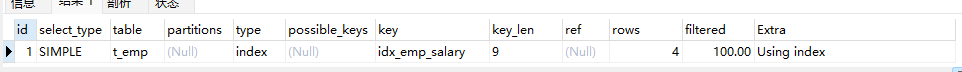
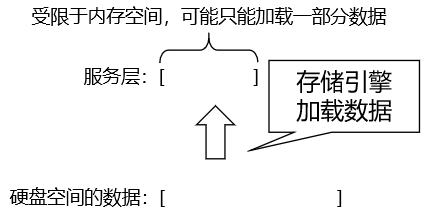

21. 进阶-索引-性能分析-explain_哔哩哔哩_bilibili
SQL执行频率
MySQL 客户端连接成功后，通过 show [session|global] status 命令可以提供服务器状态信息。通过如下指令，可以查看当前数据库的INSERT、UPDATE、DELETE、SELECT的访问频次：
-- session 是查看当前会话 ;
-- global 是查询全局数据 ;
-- com + 7个“_”
SHOW GLOBAL STATUS LIKE 'Com_______';
Com_delete: 删除次数
Com_insert: 插入次数
Com_select: 查询次数
Com_update: 更新次数
如果是以增删改为主，我们可以考虑不对其进行索引的优化。 如果是以查询为主，那么就要考虑对数据库的索引进行优化了。
【理由如下】
- 更新性能考虑：虽然索引可以提高查询性能，但它们也会降低更新操作的性能（如插入、删除和更新）。因为每当表中的数据发生变化时，相关的索引也需要被更新。因此，在更新密集型的应用中，过多的索引可能会成为性能瓶颈。
- 索引维护成本：索引需要占用额外的存储空间，并且需要定期维护（如重建或重组）以保持其性能。这也会增加数据库管理的复杂性和成本。
- 选择性考虑：并非所有的列都适合建立索引。索引的选择性（即索引列中不同值的数量与表中总行数之比）对于索引的效率至关重要。如果索引的选择性很低，那么查询时仍然需要扫描大量的索引条目，从而无法显著提高查询性能。
慢查询日志
慢查询日志记录了所有执行时间超过指定参数（long_query_time，单位：秒，默认10秒）的所有SQL语句的日志。
MySQL的慢查询日志默认没有开启，我们可以查看一下系统变量 slow_query_log。
如果要开启慢查询日志，需要在MySQL的配置文件（/etc/my.cnf）中配置如下信息：
# 开启MySQL慢日志查询开关: 1-ON-开启；0-OFF-关闭
slow_query_log=1
# 设置慢日志的时间为2秒，SQL语句执行时间超过2秒，就会视为慢查询，记录慢查询日志
long_query_time=2
# 指定了慢查询日志文件的路径
# 如果不设置，MySQL将使用默认的文件名（通常是host_name-slow.log）存储在数据目录下。
slow_query_log_file = /var/log/mysql/mysql-slow.log
配置完毕之后，通过以下指令重新启动MySQL服务器进行测试，查看慢日志文件中记录的信息
测试：执行如下SQL语句 ：
select * from tb_user; -- 这条SQL执行效率比较高, 执行耗时 0.00sec
select count(*) from tb_sku; -- 由于tb_sku表中, 预先存入了1000w的记录, count一次,耗时 13.35sec
测试：接着检查慢查询日志tail -f localhost-slow.log，这个是在/var/lib/mysql的包下
-f参数表示实时跟踪文件的新增内容，这对于监控新发生的慢查询非常有用。
mysqldumpslow
使用mysqldumpslow命令导出：在生产环境中，如果要手工分析日志，查找、分析SQL，显然是个体力活，MySQL提供了日志分析工具mysqldumpslow。
#得到返回记录集最多的10个SQL
mysqldumpslow -s r -t 10 /var/lib/mysql/atguigu-slow.log
#得到访问次数最多的10个SQL
mysqldumpslow -s c -t 10 /var/lib/mysql/atguigu-slow.log
#得到按照时间排序的前10条里面含有左连接的查询语句
mysqldumpslow -s t -t 10 -g "left join" /var/lib/mysql/atguigu-slow.log
#另外建议在使用这些命令时结合 | 和more 使用 ，否则有可能出现爆屏情况
mysqldumpslow -s r -t 10 /var/lib/mysql/atguigu-slow.log | more
以上命令运行在Linux上面，各参数的含义如下:
-a: 不将数字抽象成N，字符串抽象成S-s: 是表示按照何种方式排序；c: 访问次数l: 锁定时间r: 返回记录t: 查询时间al:平均锁定时间ar:平均返回记录数at:平均查询时间
-t: 即为返回前面多少条的数据；-g: 后边搭配一个正则匹配模式，大小写不敏感的；
profile详情
show profiles 能够在做SQL优化时帮助我们了解时间都耗费到哪里去了。通过have_profiling参数，能够看到当前MySQL是否支持profile操作
查看到当前MySQL是否支持profile操作：
SELECT @@have_profiling ;
查看当前profile是否开启：1-ON-开启；0-OFF-关闭
select @@profiling;
开启profile
# 全局
SET global profiling = 1;
# 当前会话
SET session profiling = 1;
令查看指令的执行耗时：
-- 查看每一条SQL的耗时基本情况
show profiles;
-- 查看指定query_id的SQL语句各个阶段的耗时情况
show profile for query query_id;
-- 查看指定query_id的SQL语句CPU的使用情况
show profile cpu for query query_id;
explain
MySQL体系结构中，包含 SQL 解析器、优化器等组件。SQL 解析器解析 SQL之后，生成解析树。经过验证，解析树正确后，由优化器进一步优化解析树。
使用 EXPLAIN 关键字可以模拟优化器执行 SQL 查询语句，从而知道 MySQL 是如何处理你的SQL 语句的。
语法：
-- 直接在select语句之前加上关键字 explain / desc
EXPLAIN SELECT 字段列表 FROM 表名 WHERE 条件 ;
Explain 执行计划中各个字段的含义：
| 列名 | 描述 |
|---|---|
| id | select查询的序列号，表示查询中执行select子句或者是操作表的顺序（id相同，执行顺序从上到下；id不同，值越大，越先执行）。 |
| select_type | 表示 SELECT 的类型，常见的取值有： - SIMPLE（简单表，即不使用表连接或者子查询） - PRIMARY（主查询，即外层的查询） - UNION（UNION 中的第二个或者后面的查询语句） - SUBQUERY（SELECT/WHERE之后包含了子查询） 总体的SQL 语句执行的『趟数』越少越好 |
| table | 表名 |
| partitions | 匹配的分区信息 |
| type | 表示连接类型，性能由好到差的连接类型为：NULL、system、const、eq_ref、ref、range、index、all。 |
| possible_keys | 可能用到的索引 |
| key | 实际使用的索引，如果为NULL，则没有使用索引。 |
| key_len | 表示索引中使用的字节数，该值为索引字段最大可能长度，并非实际使用长度。这个字段有助于我们推测哪些索引命中了 |
| ref | 当使用索引列等值查询时，与索引列进行等值匹配的对象信息 |
| rows | 预估的需要读取的记录条数 |
| filtered | 表示返回结果的行数占需读取行数的百分比，filtered 的值越大越好。 |
| Extra | 一些额外的信息 |
准备测试数据
create database db_hr;
use db_hr;
CREATE TABLE t1
(
id INT(10) AUTO_INCREMENT,
content VARCHAR(100) NULL,
PRIMARY KEY (id)
);
CREATE TABLE t2
(
id INT(10) AUTO_INCREMENT,
content VARCHAR(100) NULL,
PRIMARY KEY (id)
);
CREATE TABLE t3
(
id INT(10) AUTO_INCREMENT,
content VARCHAR(100) NULL,
PRIMARY KEY (id)
);
CREATE TABLE t4
(
id INT(10) AUTO_INCREMENT,
content VARCHAR(100) NULL,
PRIMARY KEY (id)
);
INSERT INTO t1(content)
VALUES (CONCAT('t1_', FLOOR(1 + RAND() * 1000)));
INSERT INTO t2(content)
VALUES (CONCAT('t2_', FLOOR(1 + RAND() * 1000)));
INSERT INTO t3(content)
VALUES (CONCAT('t3_', FLOOR(1 + RAND() * 1000)));
INSERT INTO t4(content)
VALUES (CONCAT('t4_', FLOOR(1 + RAND() * 1000)));
id字段
id值相同的情况：
explain select t1.id,t2.id,t3.id,t4.id from t1,t2,t3,t4
id值不同的情况
EXPLAIN
SELECT t1.id
FROM t1
WHERE t1.id = (SELECT t2.id FROM t2 WHERE t2.id = (SELECT t3.id FROM t3 WHERE t3.content = 't3_103'))
相同的id 值和不同的 id 值都有
EXPLAIN
SELECT t1.id, (select t4.id from t4 where t4.id = t1.id) id4
FROM t1,t2
有子查询但是id 值相同：这里id值相同是因为MySQL内部的优化器将子查询优化成了连接查询。
explain
select t1.id
from t1
where t1.id in (select t2.id from t2);
select_type 字段
一条SQL 语句总体来看：其中可能会包含很多个 select 关键字。每一个 select 代表一次小的查询，而每一个 select关键字的每一次查询都有可能是不同类型的查询。select_type 字段就是用来描述每一个select 关键字的查询类型，意思是我们只要知道了某个小查询的select_type属性，就知道了这个小查询在整个大查询中扮演了一个什么角色。而通过查看各个小查询部分扮演的角色，我们可以了解到整体SQL 语句的结构，从而判断当前 SQL 语句的结构是否存在问题。
| 取值 | 含义 |
|---|---|
| SIMPLE | 简单的 select 查询，查询中不包含子查询或者 UNION |
| PRIMARY | 查询中若包含任何复杂的子部分，最外层查询则被标记为 primary |
| SUBQUERY | 在 SELECT 或 WHERE 列表中包含了子查询 |
| DEPENDENT SUBQUERY | 在 SELECT 或 WHERE 列表中包含了子查询，子查询基于外层 |
| UNCACHEABLE SUBQUREY | 表示这个 subquery 的查询要受到外部表查询的影响 |
| DERIVED | 在 FROM 列表中包含的子查询被标记为 DERIVED(衍生)。MySQL 会递归执行这些子查询，把结果放在临时表里 |
| UNION | 这是 UNION 语句其中的一个 SQL 元素 |
| UNION RESULT | 从 UNION 表获取结果的 SELECT，也就是在 UNION 合并查询结果的基础上，不使用全部字段，选取一部分字段。 |
SIMPLE
查询语句中不包含UNION、不包含子查询的查询都算作是SIMPLE类型，比方说单表查询的select_type的值就是SIMPLE：
mysql> EXPLAIN SELECT t1.content FROM t1;
+----+-------------+-------+------------+------+---------------+------+---------+------+------+----------+-------+
| id | select_type | table | partitions | type | possible_keys | key | key_len | ref | rows | filtered | Extra |
+----+-------------+-------+------------+------+---------------+------+---------+------+------+----------+-------+
| 1 | SIMPLE | t1 | NULL | ALL | NULL | NULL | NULL | NULL | 1 | 100.00 | NULL |
+----+-------------+-------+------------+------+---------------+------+---------+------+------+----------+-------+
1 row in set, 1 warning (0.00 sec)
当然，连接查询也算是SIMPLE类型，比如：
explain
select t1.id,t2.id
from t1 left join t2 on t2.id=t1.id
PRIMARY
对于包含UNION、UNION ALL或者子查询的大查询来说，它是由几个小查询组成的，其中最左边的那个查询的select_type值就是PRIMARY
UNION
对于包含UNION或者UNION ALL的子查询来说，它是由几个小查询组成的，其中除了最左边的那个小查询以外，其余的小查询的select_type值就是UNION。
UNION RESULT
MySQL选择使用临时表来完成UNION查询的去重工作，针对该临时表的查询的select_type就是UNION RESULT。
EXPLAIN SELECT t1.content FROM t1 UNION SELECT t2.content FROM t2;
- PRIMARY对应的语句：SELECT t1.content FROM t1。
- UNION对应的语句：UNION SELECT t2.content FROM t2。
- UNION RESULT对应的语句：临时表的去重查询语句，不是我们写的语句，是系统写的语句。
UNION ALL是不去重的
SELECT t1.content FROM t1 UNION ALL SELECT t2.content FROM t2;UNION去重
SELECT t1.content FROM t1 UNION SELECT t2.content FROM t2;
SUBQUERY
如果包含子查询的查询语句不能够转为对应的semi-join的形式（不用管什么是 semi-join，只需要知道这是进一步优化），并且该子查询是不相关子查询，并且查询优化器决定采用将该子查询优化的方案来执行该子查询时，该子查询的第一个SELECT关键字代表的那个查询的select_type就是SUBQUERY。总之就是无法被优化器进一步优化的子查询就是SUBQUERY
比如下边这个查询：
EXPLAIN
SELECT *
FROM t1
WHERE t1.id = (SELECT t2.id FROM t2 WHERE t2.id = (SELECT t3.id FROM t3 WHERE t3.content = 't3_103'));
DEPENDENT SUBQUERY
如果整体 SQL 语句执行的顺序是：
- 先执行外层查询
- 再执行内层子查询
- 然后外层查询结果中的每一条再去匹配内层子查询结果的每一条。
这样，内外两层的查询结果就是相乘的关系。相乘就有可能导致总的查询操作次数非常大。所以经过 explain 分析后，如果发现查询类型是 DEPENDENT SUBQUERY 就需要引起各位注意了——这是一个危险的信号，通常是需要修复的一个问题！
当然，就实际工作中来说：别说 DEPENDENT SUBQUERY，就连 SUBQUERY 都不应该出现。
EXPLAIN
SELECT t1.id, (select t4.id from t4 where t4.id = t1.id) id4
FROM t1;
在子查询的where条件是这样的： where t4.id = t1.id。其中的t1.id的值要根据SELECT t1.id FROM t1 的查询结果来判断
table 字段
显示当前这一步查询操作所访问数据库中表名称（显示这一行的数据是关于哪张表的），有时不是真实的表名字，可能是别名。不论我们的查询语句有多复杂，里边儿包含了多少个表，到最后也是需要对每个表进行单表访问的，所以 MySQL规定EXPLAIN语句输出的每条记录都对应着某个单表的访问方法，该条记录的table列代表着该表的表名。
partitions 字段
代表分区表中的命中情况。如果是非分区表，该项为 null。逻辑上是一个整体的数据，可以在物理层保存时，拆分成很多个分片。分片在分区中保存。数据分片的好处是：
- 方便在很多个不同分区之间方便的移动分片，分摊负载，弹性扩容。
- 给主分片创建复制分片可以增强数据安全性。
type 字段 [重要]
对表访问方式，表示MySQL在表中找到所需行的方式，又称“访问类型”。具体取值参见下表（从上到下，性能越来越好）：
| 取值 | 含义 |
|---|---|
| ALL | 全表扫描 |
| index | 在索引表（聚簇索引、非聚簇索引都算）中做全表扫描 |
| range | 在一定范围内查询索引表 |
| ref | 通过普通的（不唯一）二级索引列（非聚簇索引）与常量进行等值匹配时来查询某个表 |
| eq_ref | 在连接查询时，如果被驱动表（连接语句对应的表）是通过主键或者唯一二级索引列（非聚簇索引）等值匹配的方式进行访问的（如果该主键或者唯一二级索引是联合索引的话，所有的索引列都必须进行等值比较），则对该被驱动表的访问方法就是eq_ref |
| const | 根据主键或者唯一二级索引列与常数进行等值匹配 |
| system | 表仅有一行记录，这是const类型的特例，查询起来非常迅速 |
| null | MySQL在优化过程中分解语句，执行时甚至不用访问表或索引，例如从一个索引列里选取最小值可以通过单独索引查找完成。 |
在上述查询方式中，从 eq_ref 开始，条件就很苛刻了，不容易达到。所以实际开发时要求，至少能达到 range 水平，最好能达到 ref。
准备数据：
# 创建数据库表
create table t_emp
(
emp_id int auto_increment primary key,
emp_name char(100),
emp_salary double(10, 5),
dept_id int
);
create table t_dept
(
dept_id int auto_increment primary key,
dept_name char(100)
);
# emp_id 主键索引
# emp_name 唯一索引
create unique index idx_emp_name_unique on t_emp (emp_name);
# emp_salary 普通索引
create index idx_emp_salary on t_emp (emp_salary);
# dept_name 普通索引
create index idx_dept_name on t_dept (dept_name);
type 的值是 all
原因：没有用到任何索引，全表扫描
explain
select emp_salary
from t_emp;
type 的值是 index
原因：查询的是建立了索引的字段，而且没有指定 where 条件。
在执行查询时扫描索引的整个 B+Tree
mysql 表中如果是单主键的话，那这个主键也会被 系统默认建为 索引
explain
select emp_name
from t_emp;
type 的值是 range
原因：在一定范围内访问索引 B+Tree。也就是索引用到了范围查询
explain
select emp_id, emp_name
from t_emp
where emp_salary between 1000 and 5000;
explain
select emp_id, emp_name
from t_emp
where emp_id > 1000;
explain
select emp_id, emp_name
from t_emp
where emp_salary > 1000;
问题之后在解决吧
type 的值是 ref
通过普通的二级索引列与常量进行等值匹配时来查询
explain
select dept_name
from t_dept
where dept_name = '研发部';
type 的值是 eq_ref
在进行关联查询时，被驱动表是通过主键或者唯一二级索引列等值匹配的方式进行访问
explain
select emp_id, emp_name, emp_salary
from t_emp e
left join t_dept td on e.dept_id = td.dept_id; # t_dept td 被驱动表
满足eq_ref所需条件：
- 连接查询： left join
- 被驱动表（连接语句对应的表）是通过主键或者唯一二级索引列（非聚簇索引）等值匹配的方式： e.dept_id = td.dept_id
关于select emp_id, emp_name, emp_salary from t_emp e 为什么是ALL
如果我们全部查询一个表中的某写字段的所有内容，那么type=ALL，即便所有字段都有索引。因为这样显然全表扫描更加有效
explain
select emp_id,emp_name,emp_salary
from t_emp

但是，对于如下查询语句，Type确实Index
explain
select emp_id, emp_name
from t_emp
我的理解是：联想到索引的数据结构B+tree，emp_name这个索引的数据页存的就是：emp_name和对应的 emp_id
所以，mysql会扫描整个索引（Index）而不是扫描整张表（All）
type 的值是 const
使用常量值查询一个唯一索引(包括主键），返回唯一一条记录
explain
select emp_id, emp_name, emp_salary
from t_emp
where emp_name = 'aaa';
type 的值是 null
MySQL在优化过程中分解语句，执行时甚至不用访问表或索引，例如从一个索引列里选取最小值可以通过单独索引查找完成。
explain
SELECT 5+5
explain
SELECT min(emp_salary)
from t_emp
# 差一个唯一索引和主键中没有底值
explain
select emp_id, emp_name, emp_salary
from t_emp
where emp_name = 'bbb';
explain
select emp_id, emp_name, emp_salary
from t_emp
where emp_id = 2;
key_len
key_len 表示索引使用的字节数，根据这个值可以判断索引的使用情况，特别是在组合索引的时候，判断该索引有多少部分被使用到非常重要。在索引不变的情况下，我们不断优化，那么这个值会越来越大。
如何计算字节数
变长数据类型：
对于变长数据类型,比如varchar,除了是否为空的标记外,还需要有长度信息，需要占用两个字节。
如果是 varchar 这样的变长字符串类型：再 + 2；
数值类型：最终结果就是数值类型字段宽度本身；
如果是允许为空的字段：再 + 1；
| 列类型 | KEY_LEN | 备注 |
|---|---|---|
| user varchar(30) not null utf8 | key_len=30*3+2 | utf8每个字符为3bytes,变长数据类型,加2bytes |
| user varchar(30) utf8 | key_len=30*3+2+1 | utf8每个字符为3bytes,允许为NULL,加1byte,变长数据类型,加2bytes |
| detail text(10) utf8 | key_len=30*3+2+1 | TEXT截取部分,被视为动态列类型。 |
定长数据类型：
当索引字段为定长数据类型时,如char，int，datetime，需要有是否为空的标记,这个标记占用1个字节(对于not null的字段来说,则不需要这1字节)
如果是允许为空的字段：再 + 1；
| 列类型 | KEY_LEN | 备注 |
|---|---|---|
| id int | key_len = 4+1 | int为4bytes,允许为NULL,加1byte |
| id bigint not null | key_len=8 | bigint为8bytes |
| double | key_len=8+1 | double为8bytes,允许为NULL,加1byte |
| user char(30) utf8 | key_len=30*3+1 | utf8每个字符为3bytes,允许为NULL,加1byte |
一些问题
对于Type=All或者Index的，上面规律不起作用
explain select emp_id from t_empkey_len只指示了where中用于条件过滤时被选中的索引列，是不包含order by/group by这一部分被选中的索引列的。例如,有个联合索引
idx(c1,c2,c3),3列均是int not null,那么下面的SQL执行计划中,key_len的值是8而不是12:select ... from tb where c1=? and c2=? order by c1;
ref 字段
这一列显示了在key列记录的索引中，表查找值所用到的列或常量，常见的有：const（常量），func，NULL，字段名
explain
select emp_id, emp_name, emp_salary
from t_emp
where emp_name = 'aaa';
explain
select emp_salary
from t_emp;
explain
select emp_id, emp_name, emp_salary
from t_emp e
left join t_dept td on e.dept_id = td.dept_id;
filtered 字段
通过存储引擎从硬盘加载数据到服务层时，受限于内存空间，有可能只能加载一部分数据。filtered 字段显示的值是：已加载数据 / 全部数据 的百分比。只是不显示百分号。
extra 字段
Extra 列是用来说明一些额外信息的，包含不适合在其他列中显示但十分重要的额外信息。我们可以通过这些额外信息来更准确的理解MySQL到底将如何执行给定的查询语句。MySQL提供的额外信息有好几十个，以下是几个比较重要的
| 取值 | 含义 |
|---|---|
| using where | 不用读取表中所有信息，仅通过索引就可以获取所需数据。 言外之意是 select 查询的字段都带有索引。 不管 select 查询多少个字段，这些字段都在索引中。 |
| Using temporary | 表示MySQL需要使用临时表来存储结果集，常见于排序和分组查询 |
| Using filesort | 当语句中包含 order by 操作，而且无法利用索引完成的排序操作称为“文件排序”。 这里的文件指的是保存在硬盘上的文件。 之所以会用到硬盘，是因为如果查询的数据量太大，内存空间不够，需要在硬盘上完成排序。 如果确实是很大数据量在硬盘执行排序操作，那么速度会非常慢。 简单的说：就是因为某个字段没有建索引，但是我的order by 操作又使用到了这个字段，如果要排序的数据量太大，内存空间不够，我就需要在操作硬盘来进行排序，这样速度会非常慢。 |
| Using join buffer | buffer 指缓冲区，该值强调了在获取连接条件时没有使用索引，并且需要连接缓冲区来存储中间结果。如果出现了这个值，那应该注意，根据查询的具体情况可能需要添加索引来改进能。 举例来说：where t_name like “%xxx%”，这个条件中的 t_name 字段没有加索引 |
| Impossible where | where 子句中指定的条件查询不到数据的情况 |
| Select tables optimized away | 这个值表示目前的查询使用了索引，然后经过优化器优化之后，最终执行的是一个聚合函数，从而让最终的查询结果只返回一行 |
| No tables used | 查询语句中使用 from dual 或不含任何 from 子句 |
使用explain要注意的事情
EXPLAIN 不会告诉你关于触发器、存储过程的信息或用户自定义函数对查询的影响情况
EXPLAIN 不考虑各种 Cache
EXPLAIN 不能显示 MySQL 在执行查询时所作的优化工作
部分统计信息是估算的，并非精确值
EXPALIN 只能解释 SELECT 操作，其他操作要重写为 SELECT 后查看执行计划
转载请注明来源，欢迎对文章中的引用来源进行考证，欢迎指出任何有错误或不够清晰的表达。可以在下面评论区评论，也可以邮件至 1909773034@qq.com